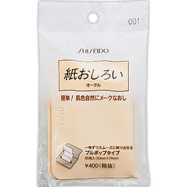

返回列表
产品名称：資生堂 紙おしろい （プルポップ） 001

資生堂 資生堂 紙おしろい （プルポップ） 001 ６５枚入
メーカー 資生堂
JANコード 4901872638390
商品の特徴
パウダーがほんのりと自然につくと同時に、手軽に化粧なおしができる紙おしろいです。肌色に透明感を演出。一枚一枚スムーズにとり出せるプルポップタイプ。
成分・分量
-
用法及び用量
【使用方法】化粧くずれが気になるときに、一枚ずつ取り、おしろい面を肌にあてて軽く押さえるようにしてご使用ください。